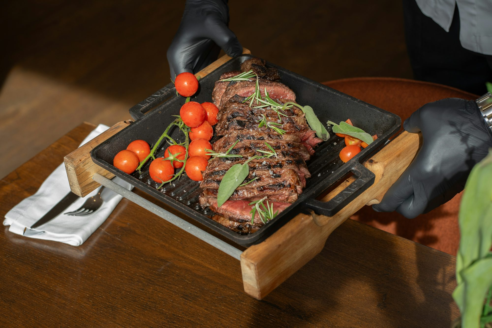
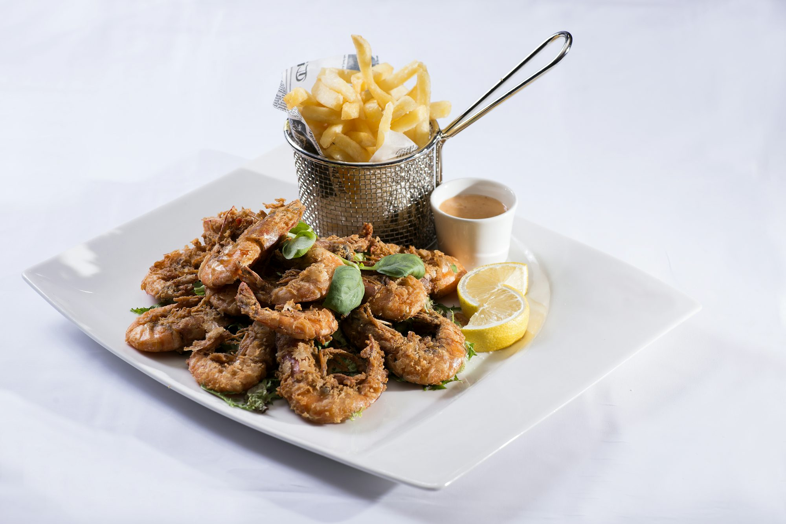
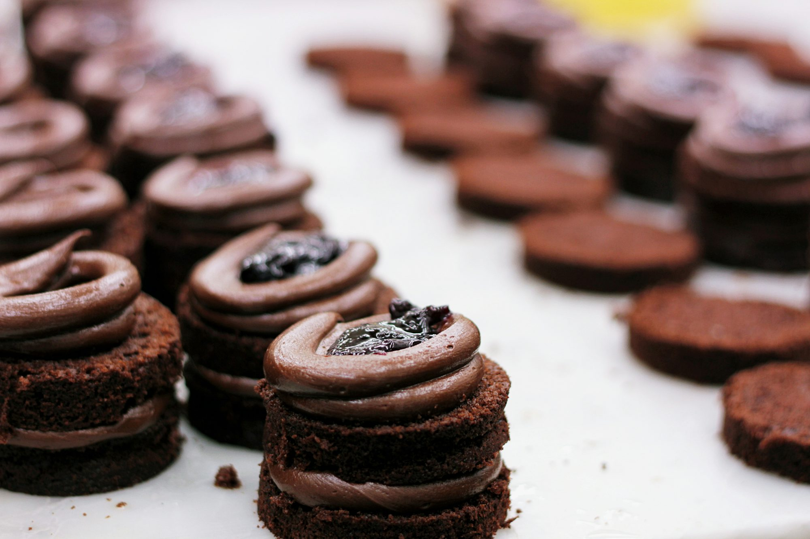
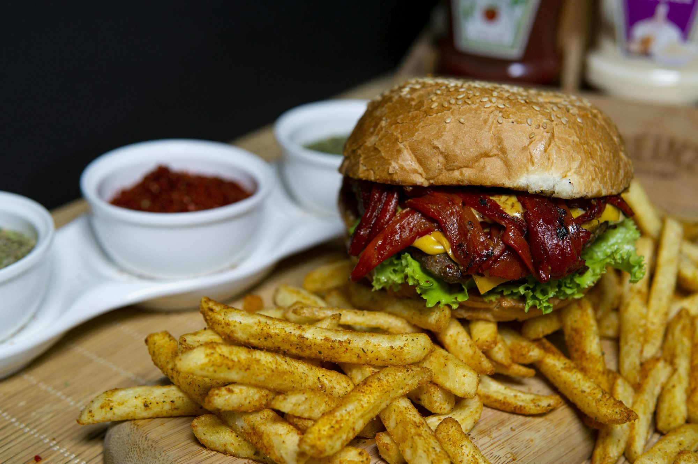
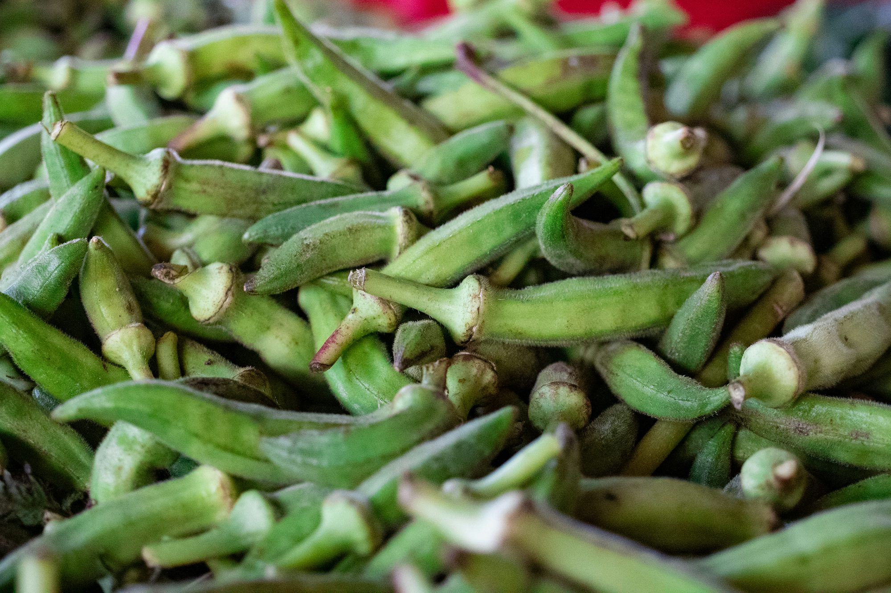
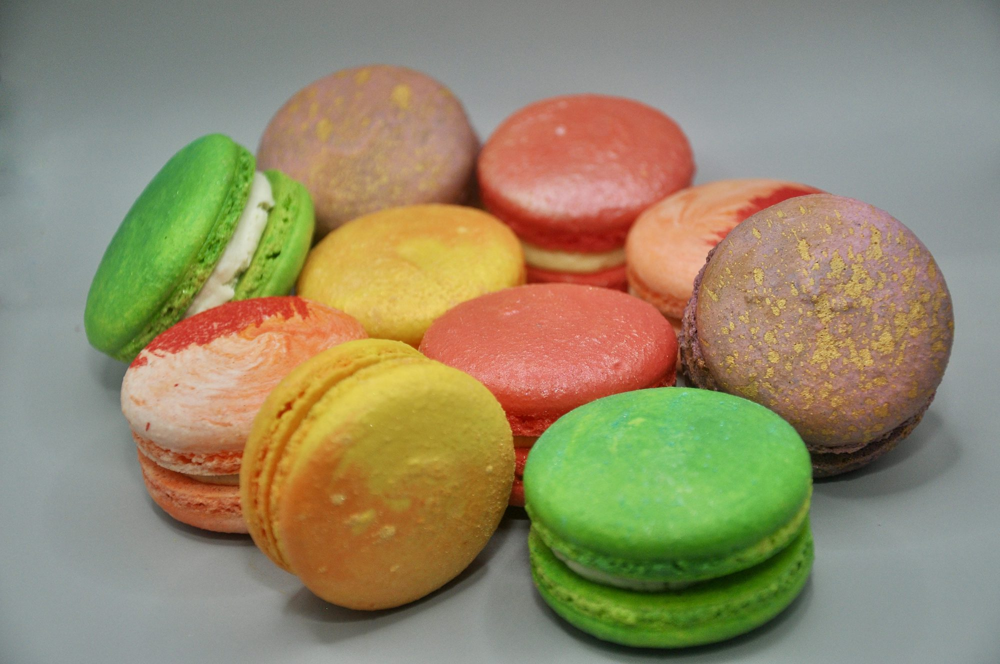
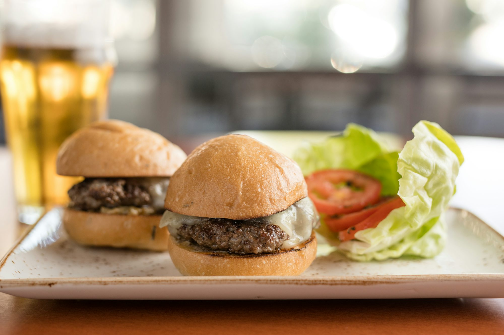
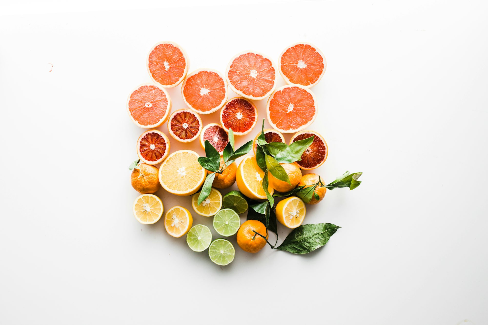

The Art of Cooking with Seasonal Vegetables
An exploration of the benefits, techniques, and recipes for cooking with seasonal vegetables throughout the year.



Juicing for the Modern Palate: How Blended Flavors are Shaping the Beverage Industry
The article explores how the modern juice industry is evolving with unique blends of fruits, vegetables, and superfoods. It looks at popular juice combinations, the benefits of innovative blends, and how sustainability and wellness trends are influencing the future of juicing.
Lucas Fitzgerald
Wednesday, February 18th 2026

Savoring the Seasons: The Art of Seasonal Cooking
An exploration of seasonal cooking, its benefits, and how to embrace local ingredients to create delicious dishes year-round.
Sophia Taylor
Sunday, November 9th 2025
Savoring Sustainability: The Rise of Eco-Friendly Dining
This article explores the growing trend of eco-friendly dining, focusing on sustainable practices, farm-to-table concepts, and the cultural shift towards mindful eating.
Sophia Reynolds
Tuesday, February 24th 2026

Exploring the World of Comfort Foods: A Global Perspective
This article delves into the comfort foods that resonate across cultures, highlighting their ingredients, preparation methods, and the feelings they evoke.
Elena Martinez
Monday, November 24th 2025

Exploring the Art of Cooking: How Home Kitchens Are Redefining Global Cuisine
A deep dive into how home cooks around the world are redefining traditional and modern cuisine, bringing unique flavors, techniques, and innovation into everyday cooking.
Emma Robinson
Sunday, January 25th 2026
Savoring the World: The Influence of Global Cuisine on Modern Dining
This article explores how global cuisines have shaped contemporary dining experiences, highlighting the fusion of flavors and the cultural significance of diverse culinary traditions.
Sophia Chen

Juice Innovations: The Future of Flavor and Health
This article explores the latest trends in the juice industry, highlighting innovative flavors, health benefits, and the importance of sustainability in juice production.
Emma Johnson
Wednesday, June 11th 2025